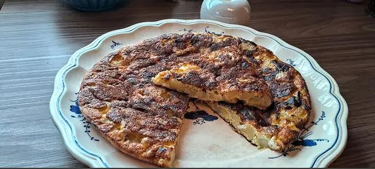

Algo rico y sano
Tortilla de zucchini
Ingredientes
1 zucchini, 1 cebolla chica, Sal, 3 huevos, Pimienta, 1 cucharadita polvo para hornear, Ajo en polvo, Tomillo.
Paso a paso
- Pelar y cortar en cubitos el zucchini
- Cortar también la cebolla bien chiquita. Aparte batir los huevos con sal, pimienta y ajo en polvo. También agregar el polvo de hornear y un poco de tomillo.
- Freír la cebolla y el zucchini. Una vez tierno agregar al batido de huevo.
- Llevar nuevamente a la sartén cocinar de ambos lados.
- ¡Buen provecho!
Papas a la crema
Ingredientes
2 papas, 1 diente de ajo, 1/2 cda. de manteca, 1/2 taza de crema de leche, 1/2 taza de leche, 1 cda. de queso untable, Sal y pimienta a gusto.
Paso a paso
- Pelar las papas y cortarlas en rodajas medianas, más o menos de 1/2 centímetro.
- Untamos el fondo de una fuente para horno con media cucharada de manteca blanda. Sobre esta manteca, frotamos el ajo, sin piel y partido al medio.
- Acomodamos en la fuente las papas, en forma de “calesita”.
- Ahora colocamos en un bol la leche, la crema de leche, el queso crema, sal, y bastante pimienta. Batimos hasta que el queso crema se disuelva.
- Echamos la mezcla de crema sobre nuestras papas y llovemos con queso rallado del que te guste. La idea no es que las papas queden bañadas en queso (por eso no usamos uno tipo mozzarella), sino que quede una cubierta crocante sobre ellas.
- Llevar a horno una media hora. Al sacarlo, se verá la parte de arriba dorada y crocante.
- ¡Buen provecho!
Croquetas de papa saborizadas al horno

Ingredientes
2 kg. papas, agua para cocción, 1 morrón, 1 huevo, 1 puerro, 4 dientes de ajo, 1 manojo de perejil, 100 gr. queso parmesano rallado, 2 cdtas. sal, 1/2 cdta. pimienta negra, 3 huevos, 1/2 cdta. sal, 1 pizca de pimienta negra, 1 cda. orégano.
Paso a paso
- Las papas las dejaremos con la cáscara para hervirlas, esto es para que no absorban demasiada agua al cocinarse. Así que las lavamos bien y las ponemos enteras en una olla grande con abundante agua. Llevamos a cocinar hasta que las pinchemos y estén bien tiernas. Luego es mejor pelarlas mientras aún están calientes para hacer el puré fácilmente.
- Mientras hervimos las papas, para adelantar tiempo cocinamos el morrón en la hornalla, esto es opcional porque se puede saltear en sartén si lo prefieren. Lo ponemos lavado y seco directamente sobre el fuego de la hornalla y lo iremos girando a medida que la piel queda quemada como muestran las fotos.
- Cuando está todo quemado, lo pelamos bajo el chorro de la canilla, la piel quemada se desprenderá rápidamente. Y el morrón tendrá un delicioso sabor asado. Reservamos. Otra cosa que vamos haciendo mientras hierven las papas, es saltear en una sartén caliente con chorrito de aceite, los dientes de ajo y el puerro picaditos y también reservamos.
- Cuando tenemos todos los pasos anteriores prontos, añadimos al puré un huevo, las hojas de perejil picadas o medias enteras, el salteado de puerro y ajo.
- También agregamos el morrón asado, queso rallado, sal y pimienta negra. Y amasamos todo hasta integrar muy bien.
- Preparamos los ingredientes para el rebozado. Batimos los huevos con la sal y las especias elegidas. Y en una asadera pequeña o algún recipiente ponemos el rebozador o pan rallado.
- Formamos con las manos cada croqueta, es mejor humedecer las manos cada tanto para que no se nos pegue el puré. Pasamos la croqueta primero por rebozador, luego por el huevo batido y de nuevo por el rebozador.
- Vamos acomodando sobre una placa. Yo no le puse aceite ni nada. Llevamos a horno precalentado y cocinamos a 180 grados por 20 minutos primero, sacamos, las giramos y dejamos apenas 5 minutos o hasta que doren.
- Sacar del horno y dejar reposar o comerlas calentitas.
Buen provecho!
Fainá de Brócoli

Ingredientes
Brócoli previamente hervido, 1 cebolla, 1 cucharada de queso crema, 2 huevos, 1/2 taza aceite, 1 y 1/2 taza de leche, 1 taza de harina integral, 1 taza de harina 0000, 1 y 1/2 taza queso rallado, 1 cucharadita de polvo de hornear, sal a gusto.
Paso a paso
- Picamos la cebolla y llevamos a saltear al sartén caliente.
- Picamos el brócoli y lo agregamos cuando la cebolla esté dorada. Salteamos 5 min, retiramos del fuego y agregamos el queso crema.
- En un bowl ponemos los huevos, aceite y leche. Batimos para integrar.
- Agregamos la harina tamizada y el polvo de hornear. Revolvemos con movimientos envolventes.
- Agregamos el queso y el salteado de brócoli.
- Lo pasamos a una asadera aceitada y enharinada. (Opcional: rellenarlo con fetas de muzzarella). Y se va a horno precalentado por 40 minutos
Buen provecho!
Crema de calabacín

Ingredientes
2 calabacines, 1 cebolla, 1/4 morrón, 2 dientes de ajo, 1 zanahoria.
Paso a Paso
- Picar la cebolla, morrón, ajos y zanahoria y llevar a rehogar con un chorro de aceite.
- Luego que esté bien rehogado agregar los calabacines cortados en rodajas agregar agua y dejar hervir por 30 minutos.
- Luego cuando esté todo cocido retirar y mixear hasta que quede todo tipo crema.
Buen provecho!
Coliflor a la crema

Ingredientes
1 coliflor, 3 huevos, 100 grs de panceta, 2 panchos (salchichas), 3 dientes de ajos, bechamel, harina, 600cc de leche, condimentos (sal, pimienta) aceite, Queso rallado, manteca para gratinar.
Paso a Paso
- Separar la coliflor en florcitas y blanquear reserva.
- Hervir por 8 minutos los huevos, reservar.
- Picar la panceta y los ajos y saltear en 1 sartén.
- Agregar la coliflor y saltear 5 o 10 minutos.
- Hacer la bechamel con la harina, aceite y leche (que quede liviana) condimentar.
- Aceitar una fuente y poner la coliflor, agregar los panchos y los huevos duros cortados.
- Agregar por encima la bechamel y espolvorear con queso rallado, poner unos dados de manteca, llevar a horno hasta que gratine unos 30 minutos aprox.
Buen provecho!
Y de postre?
Torta de Durazno
Ingredientes
2 tazas de harina común tamizada, 4 cdtas de polvo de hornear, 1 1/4 taza de azúcar, 120 grs de manteca blanda, 4 huevos, 1 cdta de esencia de vainilla, 3 duraznos cortados en rodajas.
Paso a paso
- Precalentar el horno a 180 grados. Enmantecar y enharinar un molde de torta de 24 cm.
- En un bowl, batir la manteca junto con el azúcar hasta quede cremoso. Agregar los huevos de a uno por vez, y agregar la esencia de vainilla.
- Agregar la harina y el polvo de hornear, y mezclar hasta integrar. Volcar la preparación en el molde y acomodar por encima las rodajas de frutas. Espolvorear con azúcar común y llevar al horno por 40-45 min., o hasta que, al pinchar con un cuchillo, salga seco.Dejar enfriar unos minutos antes de desmoldar.
Bizcochuelo de Naranja
Ingredientes
4 huevos, 200 g de azúcar, 250 g de harina, 1 cucharada de polvo de hornear o levadura, 100 ml de aceite de girasol, 120 ml de jugo de naranja, Ralladura de 1 naranja, Manteca para enmantecar el molde.
Paso a paso
- Precalentar el horno a 180 grados.
- En un bol grande, batir los huevos con el azúcar hasta obtener una mezcla espumosa.
- Añadir el aceite, el jugo de naranja y la ralladura de naranja y mezclar bien hasta integrar.
- Añadir la harina tamizada y la levadura en polvo y mezclar suavemente hasta que quede homogéneo.
- Enmantecar y enharinar un molde para bizcochuelo (22 cm aprox.) y verter la mezcla.
- Hornear durante 35-45 minutos o hasta que el bizcochuelo esté doradito y firme al tacto. Dejar enfriar completamente antes de desmoldar y servir.
Crema de Limón
Ingredientes
4 cdta ralladura de limón, 120 ml de jugo de limón, 220 g azúcar granulada, 6 huevos, 50 g mantequilla sin sal fría y cortada en cubitos.
Paso a paso
- Pon una olla con agua sobre fuego medio. Una vez que empieza a hervir, baja la temperatura hasta que veas solamente un ligero hervor. Ponle un bowl encima asegurándote que la base del bowl no toque la superficie del agua. Esta técnica de cocción se llama baño María.
- Retira el bowl del baño María y agrega al bowl todos los ingredientes menos la mantequilla y mezcla con un batidor de mano.
- Regresa el bowl al baño María y mezcla con una espátula cada par de minutos hasta que la crema se haya cuajado. Está listo cuando ves que la mezcla se pone gelatinosa. Además si haces un dibujo con la mezcla en la superficie éste no se va a reincorporar. Evita cocinar la crema de más o se puede cortar.
- Saca la crema del calor y transfiérelo a otro bowl a través de un colador. El colador va a atrapar pedazos grandes de ralladura así como algunos pedacitos de huevo que no se cocinan bien. Cambiarlo de bowl además hace que se detenga la cocción. Agrega la mantequilla y mezcla hasta que se haya derretido e incorporado por completo.
- Deja que la crema se enfríe totalmente a temperatura ambiente para luego refrigerar toda la noche. Úsalo en galletas, tortas, tartas y más.
Flan de peras

Ingredientes
600 grs de pera, 5 huevos, 100 grs de azúcar blanca refinada, 1/2 litro de leche entera, ralladura de piel de limón, Caramelo : 100 gr. de azúcar blanco más dos cucharadas de agua, 2 cucharadas de manteca, 2 cucharadas azúcar blanco.
Paso a paso
- Alista los ingredientes. Encaramela el fondo del molde que usarás para cocinar el flan. Enciende el horno, coloca una bandeja con agua caliente. Pon a calentar agua extra.
- Pela la pera y córtala en dados pequeños y distribuye en el fondo de la budinera.
- Bate apenas los huevos con la leche. Agrega el azúcar y la ralladura de piel de limón.
- Vierte en el molde la preparación del flan.
- Tapa el molde con papel aluminio, dejando una chimenea pequeña.
- Lleva a cocción, depositando el molde en la bandeja con agua (cocción a baño de María) Agrega agua caliente cada vez que observes que se ha evaporado
- Cocina por 50-60 minutos, o hasta que al tocar la superficie se note firme.
- Retira, deja bajar la temperatura, y cuando esté completamente frío, lleva a heladera, hasta el momento de servir.
- Desmolda pasando la base del molde sobre una olla con agua caliente, para ablandar el caramelo. Tapa el molde con una bandeja plana, y voltea, de modo que el flan se deposite en la superficie plana. Vuelve a la heladera hasta el momento de consumir.